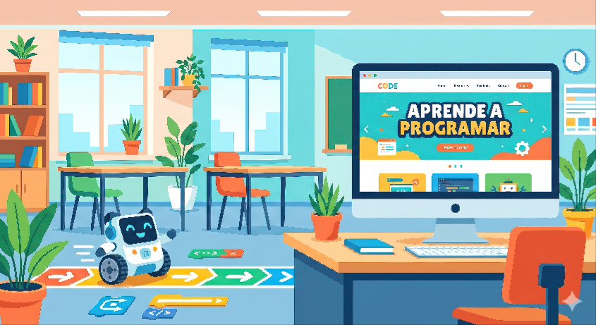

Texto
¡BIENVENIDOS AL PROYECTO: MI HUELLA DIGITAL: DEL ROBOT A MI PERFIL LABORAL
En este proyecto del taller del Ámbito de Habilidades y Destrezas Laborales (PTVAL) nos convertiremos en profesionales del entorno tecnológico. Trabajaremos de forma autónoma, responsable y segura.
¿QUÉ VAMOS A HACER?
- FASE 1: ROBÓTICA Y LOGÍSTICA. Programaremos los robots del taller para realizar el reparto y ordenación de paquetes en un almacén simulado.
- FASE 2: IDENTIDAD DIGITAL Y EMPLEO. Buscaremos nuestras capacidades laborales y crearemos una página web personal para presentarnos al mundo laboral.
💡 Nota de accesibilidad (DUA): El contenido está estructurado con frases cortas y apoyos directos para facilitar la comprensión independiente del alumnado.
